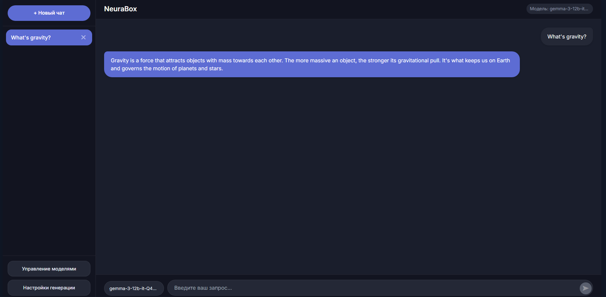
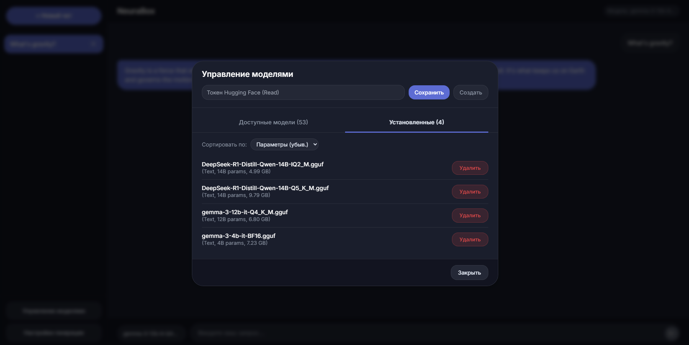
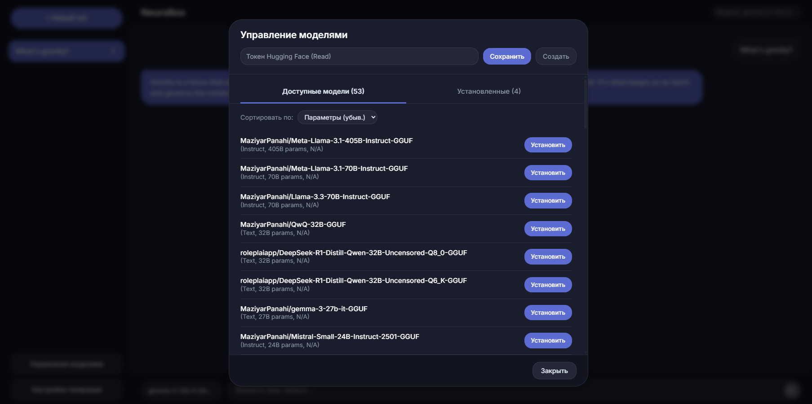
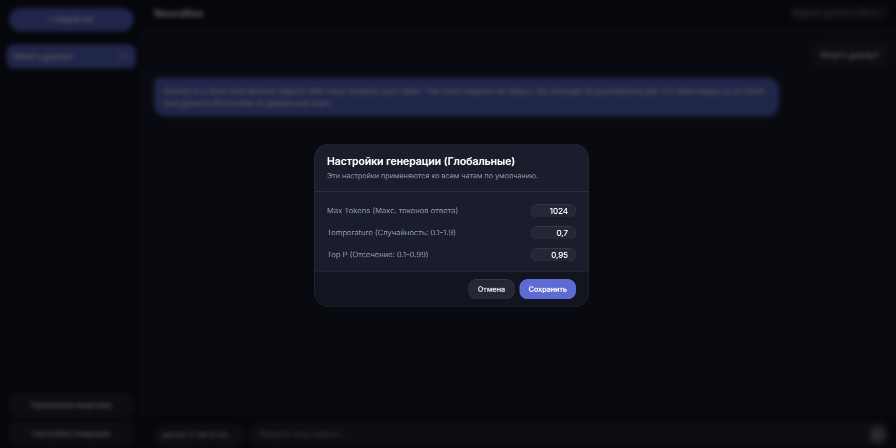

NeuraBox
Описание
NeuraBox — это мощное и гибкое приложение-ИИ ассистент, разработанное для работы с различными нейронными сетями и обеспечивающее удобный пользовательский интерфейс для генерации текста, изображений и видео. Приложение имеет интуитивно понятный интерфейс, возможность переключения моделей в реальном времени и локальную обработку данных без зависимости от внешних серверов.
NeuraBox предназначен для энтузиастов ИИ, исследователей и разработчиков, которые ищут приватный и эффективный способ взаимодействия с локальными моделями ИИ.
Основные Возможности
- Система чатов с вкладками: Управление несколькими диалогами с разными моделями.
- Поддержка множества моделей: Выбор из широкого спектра моделей ИИ, доступных на Hugging Face.
- Локальная обработка: Запуск моделей ИИ прямо на вашем компьютере без облачных зависимостей.
- Интерфейс с темной темой: Современный и элегантный дизайн с акцентом на удобство использования.
- Чат в реальном времени: Взаимодействие с ИИ в интерфейсе, похожем на чат.
- Синхронизация задач: Управление задачами и отслеживание предыдущих взаимодействий.
- Расширенная настройка: Тонкая настройка поведения моделей и предпочтений.
Планируемые Возможности
- Поддержка различных моделей ИИ: Интеграция моделей, специализирующихся на генерации текста, изображений и видео.
- Потоковая передача текста: Плавная генерация текста в реальном времени для лучшего пользовательского опыта.
- Доступ в Интернет для моделей ИИ: Планируемая функция, позволяющая моделям извлекать данные в реальном времени для повышения точности ответов.
Технологии
В разработке NeuraBox был использован следующий стек технологий:
- Backend и Ядро ИИ (Python):
- Python 3.x
- PyTorch
- Hugging Face Ecosystem (Transformers, Tokenizers, Hub)
- llama.cpp
- FastAPI
- NumPy / SciPy / Scikit-learn
- FAISS
- Pydantic
- Frontend (JavaScript):
- React
- Tailwind CSS
- React Markdown, React Icons
- Инструменты и Другое:
- Git & GitHub
- Asyncio
- Uvicorn / aiohttp
- Webpack / react-scripts
Ссылки
- Репозиторий на GitHub
- Скачивание / Демо: Релизная версия скоро будет доступна!
Скриншоты / Медиа



